CHECKPOINT 8
1. ¿Qué tipo de bucles hay en JS?
Los bucles (loops) son estructuras de control que permiten repetir un bloque de código varias veces. Son fundamentales para automatizar tareas, recorrer datos y evitar repetir código manualmente.
En JavaScript existen varios tipos de bucles, cada uno con un propósito específico.
-
Bucle for:
Un bucle for en JavaScript para repetir un bloque de código un número determinado de veces. Es especialmente útil cuando sabes de antemano cuántas iteraciones necesitas, por ejemplo al recorrer un array o contar desde un número inicial hasta uno final.
La sintaxis básica de un bucle for tiene tres partes dentro de los paréntesis: inicialización, condición y actualización. Estas tres partes están separadas por punto y coma. Primero se ejecuta la inicialización una sola vez, luego antes de cada iteración se evalúa la condición, y si esta es verdadera se ejecuta el bloque de código. Después de cada iteración se ejecuta la actualización, y el proceso se repite.
for (inicialización; condición; actualización) { // código a ejecutar }Ejemplo básico:
for (let i = 0; i < 5; i++){ console.log(i); }Funcionamiento paso a paso:
- Se ejecuta la inicialización (let i = 0) una sola vez.
- Se evalúa la condición (i < 5).
- Si la condición es verdadera, se ejecuta el bloque de código.
- Se ejecuta la actualización (i++).
- Se repite el proceso hasta que la condición sea falsa.
La actualización se puede poner de cualquier manera, es decir, en incrementos o decrementos de diferente cantidad (no tiene por qué ser de uno en uno). La función solamente comprueba que la condición siga siendo true para iniciar el bucle.
Si la condición es false en el primer ciclo nada del código se ejecuta.
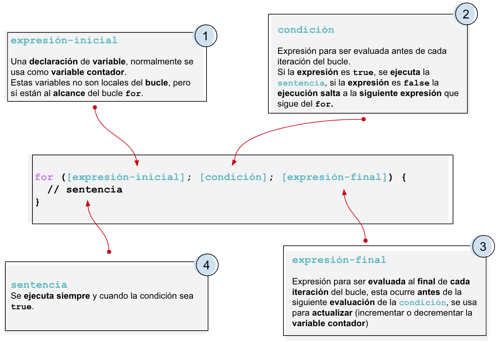
Se permite la anidación de múltiples bucles **for** uno dentro del otro, en estos casos hay que utilizar diferentes variables de iteración ya que cualquier normalmente se desea que esta sea independiente para cada bucle **for**. Ejemplo:
```
for (let i = 1; i <= 3; i++) {
for (let j = 1; j <= 5; j++) {
console.log(i + " x " + j + " = " + (i * j));
}
}
```
Aquí el bucle externo usa la variable i y va del 1 al 3. Por cada valor de i, el bucle interno usa j y va del 1 al 5.
Por ejemplo, cuando i vale 1, el bucle interno imprime todas las multiplicaciones de 1. Luego i pasa a 2 y se repite todo el proceso.
Es importante tener en cuenta que los bucles anidados pueden ser costosos en términos de rendimiento si las iteraciones son muy grandes, porque el número total de ejecuciones es el producto de ambos bucles. Por ejemplo, si uno se ejecuta 100 veces y el otro también, el bloque interno se ejecutará 10,000 veces.
-
Bucle while
Este bucle se utiliza cuando no sabes exactamente cuántas veces se va a ejecutar el código, pero sí conoces la condición de salida.
La estructura básica de un while en JavaScript es la siguiente:
while (condición) { // código a ejecutar }Ejemplo:let i = 0; while (i < 5) { console.log(i); i++; }Se crea una variable i con valor 1. Luego el while comprueba si i es menor o igual a 5. Como lo es, entra al bucle y muestra el valor de i. Después incrementa i en 1. Esto se repite hasta que i llega a 6. En ese momento, la condición i <= 5 es falsa y el bucle se detiene. Se leera en la salida 1 2 3 4 5.
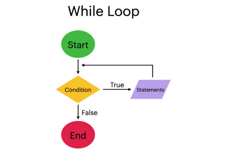
Es muy importante en estos bucles entender que si la condición no se cumple o no existe algo que afecte a la condición, nunca saldrá de dicho circulo y estaremos ante un código atascado del que solo se puede salir cancelando el programa.
while (true) { console.log("Esto nunca termina"); }Suelen ser muy usados en sistemas que deben quedar encendidos esperando una acción externa o que requieren de una acción continua como un menú de un videojuego en el que hasta que no se selecciona una acción sigue la misma pantalla.

-
Bucle do...while
Es muy similar a while, pero con una diferencia clave: el código se ejecuta al menos una vez, aunque la condición sea falsa desde el principio.
Sintaxis:
do { // código } while (condición);Ejemplo:
let i = 0; do { console.log(i); i++; } while (i < 5);
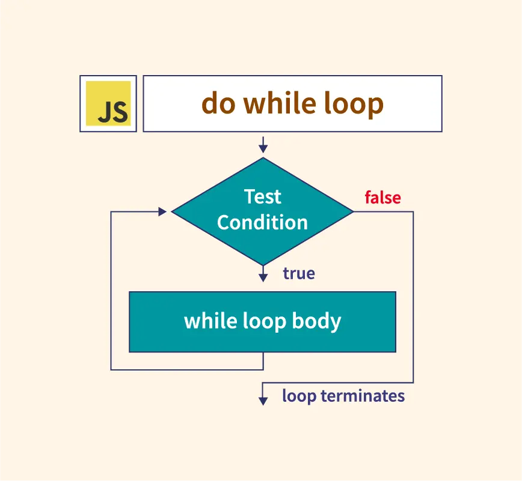
Diferencia importante:
- while: primero comprueba, luego ejecuta
- do...while: primero ejecuta, luego comprueba
Es muy típico su uso para crear algo y luego comprobar la condicion de si debe seguir existiendo (constructor, objeto).
-
Bucle for...of
Este bucle está diseñado para recorrer valores directamente dentro de estructuras iterables (como arrays o strings), sin necesidad de usar índices.
Sintaxis:
for (let variable of iterable) { // código }Ejemplo con array:
const numeros = [10, 20, 30]; for (let num of numeros) { console.log(num); }Con este tipo de bucle lo que se consigue es un código más limpio y legible ya que es una operación muy común. Además, se evita el manejo de índices y errores de rango.
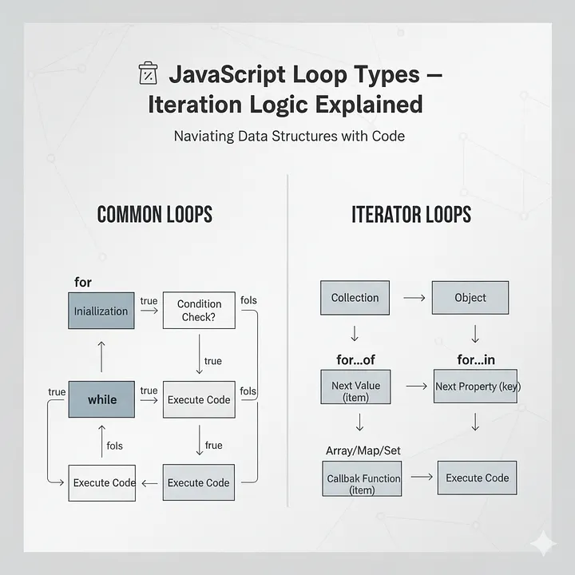
-
Bucle for...in
Este bucle se utiliza para recorrer las propiedades (claves) de un objeto por lo que tiene un uso muy orientado a objetos y es muy util en este campo simplificando y aclarando el cógigo.
Sintaxis:
for (let clave in objeto) { // código }Ejemplo:
const persona = { nombre: "Ana",edad: 25,ciudad: "Madrid" }; for (let clave in persona) { console.log(clave); // nombre, edad, ciudad console.log(persona[clave]); // valores }En cada iteración, "clave" toma el nombre de una propiedad del objeto por lo que se pueden hacer diferentes acciones con la misma variable mientras esta cambia.No se recomienda usar for...in para arrays, porque recorre índices como strings y puede incluir propiedades heredadas dandonos errores no esperados en el código.
-
Comandos clave en el uso de bucles.
-
break:
Sirve para salir completamente del bucle antes de que termine.
for (let i = 0; i < 10; i++) { if (i === 5) break; console.log(i); }Resultado: imprime del 0 al 4 aunque la condición permita llegar hasta 9. -
continue:
Sirve para saltar una iteración y continuar con la siguiente.
for (let i = 0; i < 5; i++) { if (i === 2) continue; console.log(i); }Resultado: imprime 0, 1, 3, 4
-
2. ¿Cuáles son las diferencias entre const, let y var?
En JavaScript, const, let y var son formas de declarar variables, pero tienen diferencias importantes en alcance, reasignación, elevación (hoisting) y comportamiento general.
-
La primera gran diferencia es el alcance (scope):
Las variables declaradas con var tienen alcance de función, lo que significa que solo están limitadas por la función en la que se declaran. Si se declaran fuera de una función, pasan a ser globales.
En cambio, let y const tienen alcance de bloque, es decir, solo existen dentro del bloque de código donde se definen, como dentro de un if, un for o cualquier par de llaves.Ejemplo con var:
if (true) { var x = 10; } console.log(x);Aquí x sigue existiendo fuera del bloque, lo que puede causar problemas en programas grandes.Ejemplo con let:
if (true) { let y = 20; } console.log(y);Esto da error, porque y solo existe dentro del bloque.
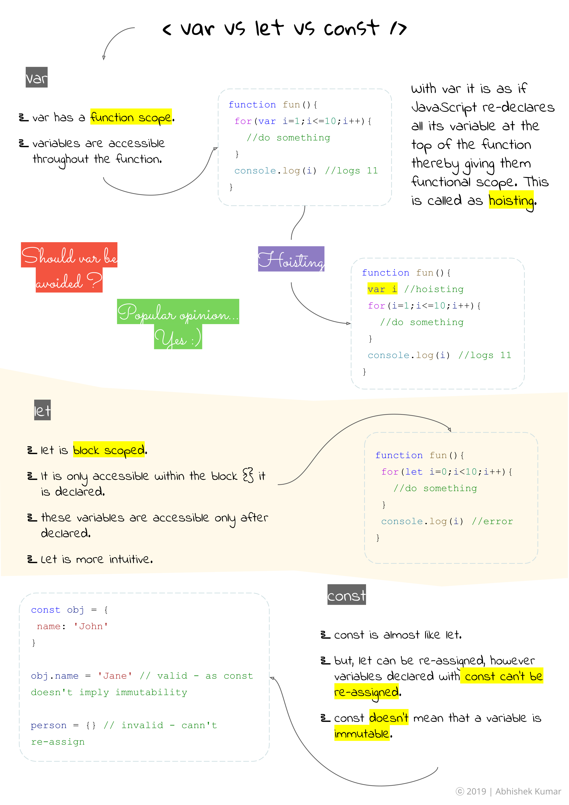
- La segunda diferencia es la reasignación.
Las variables declaradas con let pueden cambiar su valor posteriormente, mientras que las declaradas con const no pueden ser reasignadas después de su inicialización.
Ejemplo con let:
```
let numero = 5;
let numero = 10;
```
Esto da error porque no se permite la reasignación en el mismo bloque de código. Sin embargo:
```
let numero = 5;
numero = 10;
```
Este reasigna la variable correctamente a 10.
Ejemplo con const:
```
const numero = 5;
numero = 10;
```
Esto produce un error porque *const* no permite reasignar.
- Hay un matiz importante: const no significa que el valor sea completamente inmutable, sino que la referencia no puede cambiar. Por ejemplo, si se trata de un objeto o un array, sí se pueden modificar sus propiedades o elementos.
Ejemplo:
```
const persona = { nombre: "Ana" };
persona.nombre = "Luis";
```
Pero si intentamos cambiar la variable entera:
```
persona = { nombre: "Carlos" };
```
Esto nos dará error.
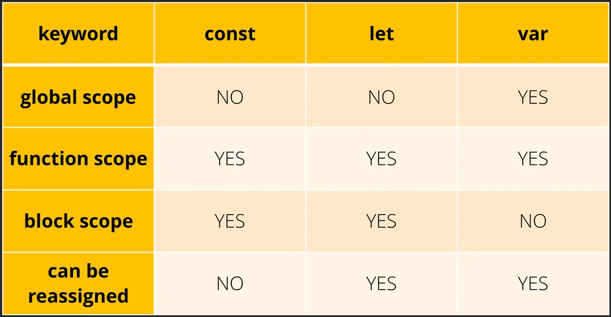
-
Otra diferencia clave es la elevación o hoisting.
En JavaScript, las declaraciones con var se elevan al inicio de su contexto, pero se inicializan con undefined. En cambio, let y const también se elevan, pero no se pueden usar antes de su declaración porque están en lo que se llama “zona muerta temporal”.Ejemplo con var:
console.log(a); var a = 5;Esto imprime undefined.Ejemplo con let:
console.log(a); let a = 5;Esto da error porque a no está accesible antes de declararse.En el caso de const, además, es obligatorio asignarle un valor en el momento de la declaración.
No se puede declarar una constante sin inicializarla.const x;Esto produce error. -
Por último cabe destacar su uso en bucles.
let es muy útil en bucles porque crea una nueva variable en cada iteración, evitando problemas comunes que ocurrían con var.for (var i = 0; i < 3; i++) { setTimeout(() => console.log(i), 100); }Esto imprime 3, 3, 3 porque i es la misma variable.for (let i = 0; i < 3; i++) { setTimeout(() => console.log(i), 100); }Esto imprime 0, 1, 2 porque cada iteración tiene su propia i.
En resumen, var es la forma antigua de declarar variables y tiene comportamientos que pueden causar errores, como el alcance de función y el hoisting permisivo. let es más seguro y flexible, ya que permite reasignación y respeta el alcance de bloque. const es ideal cuando no quieres que la variable cambie de referencia, ayudando a escribir código más predecible. En la práctica moderna, se recomienda usar const por defecto y let solo cuando necesitas cambiar el valor, evitando var en la mayoría de los casos.
3. ¿Qué es una función de flecha?
Una función de flecha (arrow function) es una forma más moderna y concisa de escribir funciones en JavaScript.
Fue introducida en ES6 y se caracteriza por usar la sintaxis => en lugar de la palabra clave function. Su objetivo principal es simplificar la escritura de funciones y manejar de forma diferente el contexto de this.
-
La forma básica de una función de flecha es:
const suma = (a, b) => { return a + b; }; -
Esta función hace lo mismo que una función tradicional (function) pero una de las ventajas principales es que permite escribir funciones más cortas.
-
Si la función tiene una sola expresión, se puede omitir el return y las llaves:
const suma = (a, b) => a + b; -
Si solo hay un parámetro, también se pueden omitir los paréntesis:
const cuadrado = x => x * x; -
Si no hay parámetros, se deben usar paréntesis vacíos:
const saludar = () => console.log("Hola");
-
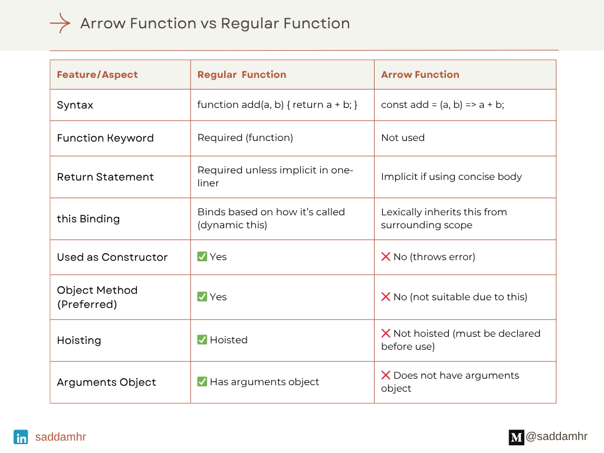
-
Una característica importante es cómo manejan el this. Las funciones tradicionales tienen su propio this, que depende de cómo se llamen. En cambio, las funciones de flecha no tienen su propio this, sino que heredan el this del contexto en el que fueron definidas.
- Ejemplo con función tradicional:
const persona = { nombre: "Ana", saludar: function() { console.log(this.nombre); } }; persona.saludar(); - Ejemplo con función de flecha:
const persona = { nombre: "Ana", saludar: () => { console.log(this.nombre); } }; persona.saludar();En este segundo caso, no funciona como se espera porque this no apunta al objeto persona, sino al contexto externo (por ejemplo, window en el navegador).
- Ejemplo con función tradicional:
-
Donde las funciones de flecha son especialmente útiles es en funciones pequeñas, como callbacks.
Por ejemplo:
const numeros = [1, 2, 3]; const dobles = numeros.map(n => n * 2);
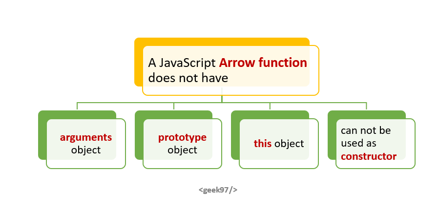
- Las funciones de flecha no tienen argumentos, no se pueden usar como constructores con new y no tienen prototype.
const Persona = (nombre) => { this.nombre = nombre; }; const p = new Persona("Ana");Esto genera error.
En resumen, las funciones de flecha son una forma más corta y moderna de escribir funciones en JavaScript, especialmente útiles para funciones pequeñas y callbacks. Sin embargo, no son un reemplazo total de las funciones tradicionales, ya que su comportamiento con this y otras limitaciones hacen que en algunos casos sea mejor seguir usando function.
4. ¿Qué es la deconstrucción de variables?
La deconstrucción de variables (destructuring en JavaScript) es una forma de extraer valores de arrays u objetos y asignarlos directamente a variables, de manera más corta y clara.
-
En lugar de acceder a cada valor manualmente, puedes “desempaquetarlos” en una sola línea.
Con arrays, la deconstrucción se basa en la posición de los elementos. Por ejemplo:
const numeros = [10, 20, 30]; const [a, b, c] = numeros;Aquí, a vale 10, b vale 20 y c vale 30. Cada variable toma el valor según su posición en el array. -
También puedes saltarte elementos:
const numeros = [10, 20, 30]; const [a, , c] = numeros;Aquí, a vale 10 y c vale 30, mientras que el segundo valor se ignora. -
Incluso puedes asignar valores por defecto:
const [a = 5, b = 10] = [1];En este caso, a vale 1 y b toma el valor por defecto 10 porque no existe en el array. -
Con objetos, la deconstrucción se basa en los nombres de las propiedades, no en el orden:
const persona = { nombre: "Ana", edad: 25 }; const { nombre, edad } = persona;Aquí se crean dos variables, nombre y edad, con los valores del objeto.-
También puedes cambiar el nombre de las variables:
const { nombre: n, edad: e } = persona;En este caso, n vale "Ana" y e vale 25. -
Y puedes usar valores por defecto:
const { nombre, edad, ciudad = "Madrid" } = persona;Como ciudadno existe en el objeto, toma el valor "Madrid".
-
-
Otra utilidad muy común es usar deconstrucción en parámetros de funciones:
function saludar({ nombre, edad }) { console.log(Hola, soy ${nombre} y tengo ${edad} años); } saludar({ nombre: "Ana", edad: 25 });Esto permite trabajar directamente con las propiedades sin tener que acceder a ellas dentro de la función.
En resumen, la deconstrucción de variables es una forma más limpia, rápida y legible de trabajar con datos en arrays y objetos, evitando código repetitivo y facilitando la manipulación de estructuras complejas.
5. ¿Qué hace el operador de extensión en JS?
El operador de extensión en JavaScript, conocido como spread operator y representado por tres puntos (...), sirve para “expandir” o “descomponer” elementos de estructuras como arrays, objetos o incluso cadenas en partes individuales.
Su uso principal es hacer copias, combinar estructuras o pasar múltiples valores de forma más cómoda.
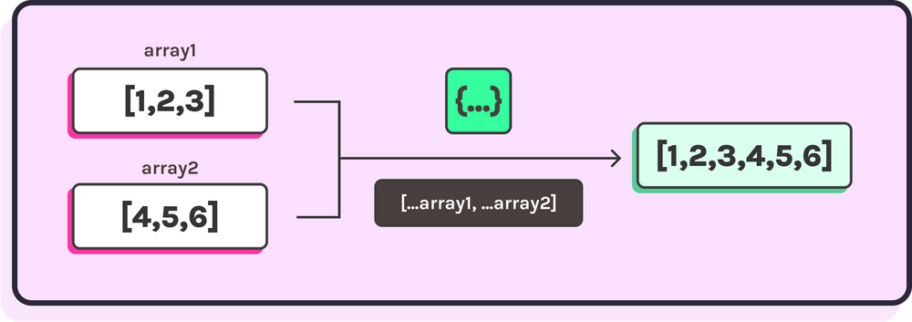
-
Con arrays, permite expandir sus elementos. Por ejemplo:
const numeros = [1, 2, 3]; const copia = [...numeros];Aquí se crea una copia del array. Es una copia superficial, pero suficiente en muchos casos. -
También se usa para combinar arrays:
const a = [1, 2]; const b = [3, 4]; const combinado = [...a, ...b];El resultado es un nuevo array con todos los elementos: [1, 2, 3, 4]. -
Otra utilidad es añadir elementos fácilmente:
const numeros = [2, 3]; const nuevo = [1, ...numeros, 4];Esto da como resultado [1, 2, 3, 4]. -
Con objetos, el operador de extensión permite copiar y combinar propiedades:
const persona = { nombre: "Ana", edad: 25 }; const copia = { ...persona };También puedes sobrescribir valores:const persona = { nombre: "Ana", edad: 25 }; const actualizada = { ...persona, edad: 30 };Aquí se copia el objeto original, pero se cambia la edad a 30. -
En funciones, el operador de extensión permite pasar elementos de un array como argumentos individuales:
function suma(a, b, c) { return a + b + c; } const numeros = [1, 2, 3]; suma(...numeros);Esto equivale a llamar suma(1, 2, 3).
-
También se puede usar con strings, ya que son iterables:
const texto = "hola"; const letras = [...texto];El resultado es un array: ["h", "o", "l", "a"]. -
Es importante no confundir el operador de extensión (spread) con el operador rest, aunque usan la misma sintaxis (...). El spread se usa para expandir elementos, mientras que el rest se usa para agrupar varios elementos en uno solo, por ejemplo en parámetros de funciones:
function sumar(...numeros) { return numeros.reduce((acc, n) => acc + n, 0); }
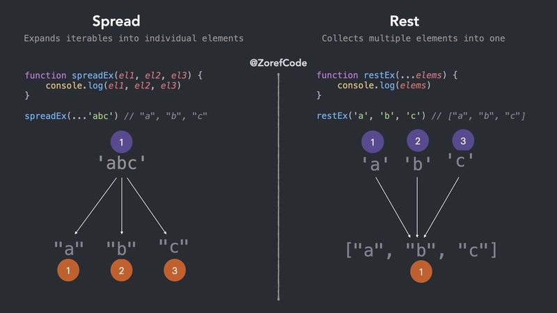
En resumen, el operador de extensión es una herramienta muy útil y moderna que simplifica tareas comunes como copiar, combinar y manipular arrays y objetos, haciendo el código más limpio y legible.
6. ¿Qué es la programación orientada a objetos?
La programación orientada a objetos (POO) es un paradigma de programación que organiza el código en torno a “objetos”, que son entidades que combinan datos (propiedades) y comportamiento (métodos). En lugar de centrarse solo en funciones y lógica secuencial, la POO modela el software de forma más cercana a cómo pensamos en el mundo real.
Un objeto representa algo concreto, por ejemplo una persona, un coche o una cuenta bancaria. Cada objeto tiene características (como nombre, edad, color) y acciones que puede realizar (como saludar, acelerar o retirar dinero).
- Las clases son como plantillas o moldes para crear objetos. Definen qué propiedades y métodos tendrán los objetos que se creen a partir de ellas. Por ejemplo, puedes tener una clase Persona y luego crear múltiples objetos diferentes a partir de esa clase.
class Persona { constructor(nombre, edad) { this.nombre = nombre; this.edad = edad; } saludar() { console.log("Hola, soy " + this.nombre); } }¡ const persona1 = new Persona("Ana", 25); persona1.saludar();Aquí, Persona es la clase, y persona1 es un objeto creado a partir de ella.
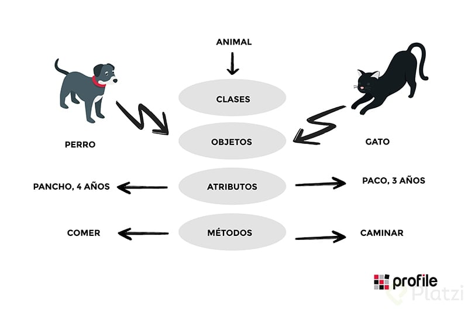
La POO se basa en varios conceptos clave:
-
Uno de ellos es la encapsulación, que consiste en agrupar datos y métodos dentro de un objeto y controlar el acceso a ellos. Esto ayuda a proteger la información y evitar modificaciones indebidas.
-
Otro concepto es la herencia, que permite crear nuevas clases basadas en otras existentes, reutilizando código.
class Animal { hablar() { console.log("Hace un sonido"); } } class Perro extends Animal { hablar() { console.log("Ladra"); } } const miPerro = new Perro(); miPerro.hablar();Aquí, Perro hereda de Animal y redefine el método hablar. -
El polimorfismo permite que diferentes objetos respondan de manera distinta al mismo método. En el ejemplo anterior, hablar se comporta diferente en Animal y en Perro.
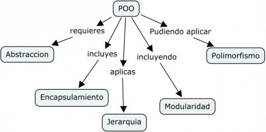
- También está la abstracción, que consiste en mostrar solo los detalles necesarios y ocultar la complejidad interna. Esto facilita el uso del código sin necesidad de entender todos los detalles de su implementación.
En resumen, la programación orientada a objetos es una forma de organizar el código para hacerlo más modular, reutilizable y fácil de mantener. Se basa en objetos y clases, y utiliza conceptos como encapsulación, herencia, polimorfismo y abstracción para estructurar mejor los programas.
7. ¿Qué es una promesa en JS?
Una promesa en JavaScript es un objeto que representa el resultado de una operación asíncrona, es decir, una tarea que no se completa inmediatamente, como una petición a un servidor, leer un archivo o esperar un temporizador.
La idea principal es que una promesa actúa como un “compromiso” de que en el futuro se obtendrá un resultado, que puede ser exitoso o fallido.
- Una promesa puede estar en tres estados. El estado pendiente significa que la operación todavía no ha terminado. El estado cumplido (fulfilled) indica que la operación se completó correctamente y hay un resultado disponible. El estado rechazado (rejected) significa que ocurrió un error.
Se crea una promesa usando el constructor Promise, que recibe una función con dos parámetros: resolve y reject. resolve se llama cuando la operación termina bien, y reject cuando hay un error.
const promesa = new Promise((resolve, reject) => {
setTimeout(() => {
const exito = true;
if (exito) {
resolve("Operación completada");
} else {
reject("Ocurrió un error");
}
}, 2000);
});
Para trabajar con el resultado de una promesa se usan los métodos then y catch. then se ejecuta cuando la promesa se cumple, y catch cuando se rechaza.
promesa
.then(resultado => {
console.log(resultado);
})
.catch(error => {
console.log(error);
});
También se pueden encadenar múltiples then para realizar varias acciones seguidas con el resultado:
promesa
.then(res => {
return res + " con éxito";
})
.then(res => {
console.log(res);
})
.catch(err => {
console.log(err);
});

Otra forma más moderna de trabajar con promesas es usando async y await, que permite escribir código asíncrono como si fuera síncrono:
async function ejecutar() {
try {
const resultado = await promesa;
console.log(resultado);
} catch (error) {
console.log(error);
}
}
ejecutar();
Esto hace que el código sea más fácil de leer y mantener.
En resumen, una promesa en JavaScript es una herramienta para manejar operaciones asíncronas de forma más organizada, evitando problemas como el “callback hell” y permitiendo trabajar con resultados futuros de manera clara y estructurada.
8. ¿Qué hacen async y await por nosotros?
async y await son herramientas de JavaScript que hacen que trabajar con código asíncrono sea mucho más claro y fácil de leer. Básicamente, permiten escribir código que parece síncrono (es decir, que se ejecuta paso a paso) aunque en realidad esté manejando operaciones que tardan tiempo, como peticiones a APIs o lecturas de datos.
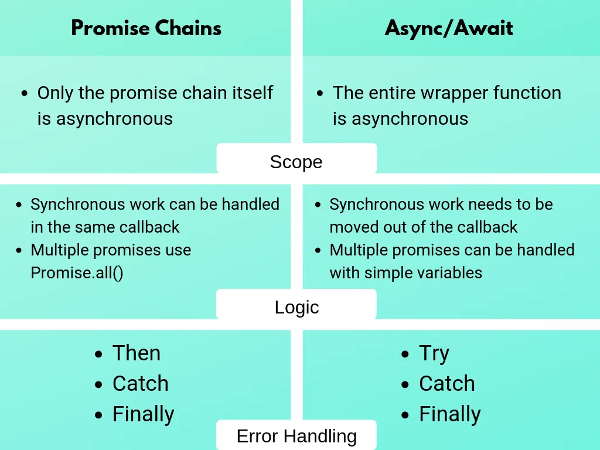
- La palabra clave async se coloca antes de una función para indicar que esa función siempre va a devolver una promesa. Aunque dentro devuelvas un valor normal, JavaScript lo envuelve automáticamente en una promesa.
async function saludar() { return "Hola"; }Esto en realidad equivale a:function saludar() { return Promise.resolve("Hola"); } -
Por otro lado, await se usa dentro de funciones async y sirve para "esperar" a que una promesa se resuelva antes de continuar con la ejecución. Hace que el código se detenga en ese punto hasta que haya un resultado, sin bloquear el hilo principal.
Ejemplo con promesas normales:
function obtenerDatos() { return fetch("https://api.ejemplo.com/datos ") .then(res => res.json()) .then(data => { console.log(data); }) .catch(err => { console.log(err); }); }Ejemplo con async/await:async function obtenerDatos() { try { const res = await fetch("https://api.ejemplo.com/datos"); const data = await res.json(); console.log(data); } catch (err) { console.log(err); } }Como ves, con async/await el código es más fácil de leer porque se parece más a un flujo normal, sin encadenar muchos then.
Algo importante es que await solo funciona dentro de funciones async (o en módulos modernos donde se permite top-level await). Además, aunque parezca que el código se detiene, en realidad JavaScript sigue manejando otras tareas gracias al event loop.
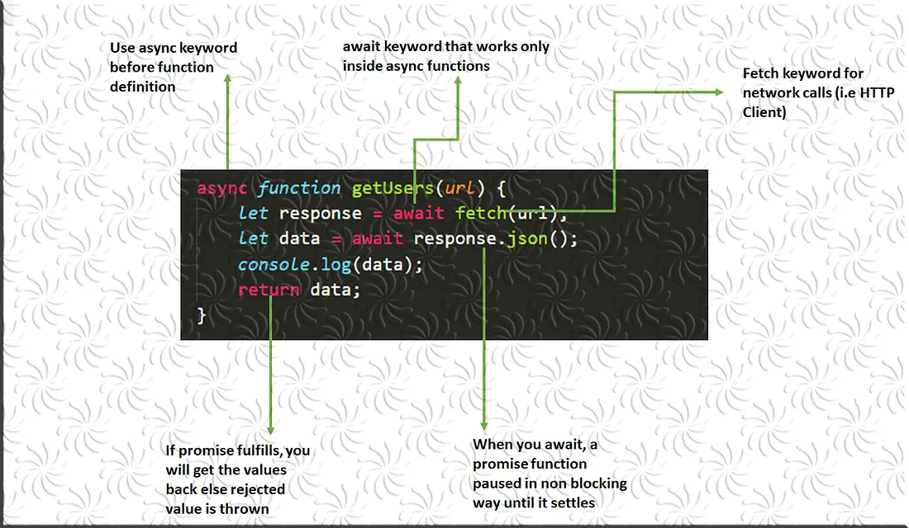
- También puedes usar await con varias promesas. Si quieres ejecutarlas en paralelo, puedes usar Promise.all:
async function ejemplo() { const [a, b] = await Promise.all([promesa1, promesa2]); console.log(a, b); }En resumen, async convierte una función en asíncrona y hace que devuelva una promesa, mientras que await permite esperar el resultado de esa promesa de forma más limpia. Juntos simplifican mucho el manejo de operaciones asíncronas y hacen el código más legible y mantenible.